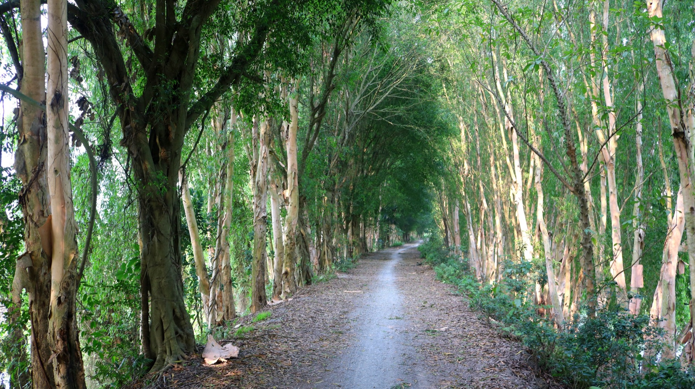
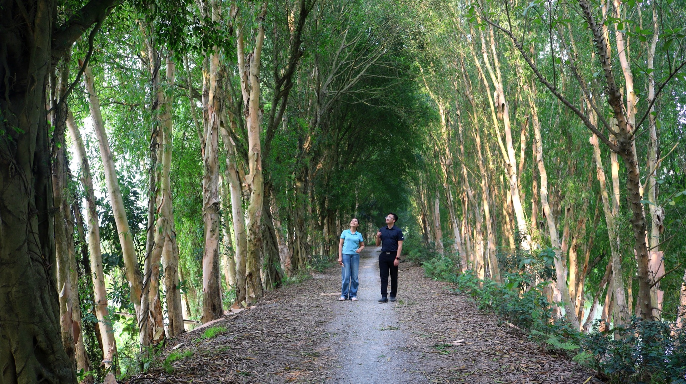

Loại hìnhTypeType
Cảnh quan thiên nhiênNatural landscapesPaysages naturels

Con đường Tràm là đoạn đường dài khoảng 800m với hai hàng tràm cổ thụ hai bên, tán lá đan quyện vào nhau khép thành vòm xanh mướt che phủ trọn lối đi. Không gian mộc mạc, yên bình và đậm chất làng quê tạo nên một điểm check-in đẹp và ấn tượng, thu hút nhiều du khách muốn lưu lại khoảnh khắc độc đáo trong hành trình khám phá Mường Cốc.
Con đường Tràm là một phần không thể tách rời trong hành trình trải nghiệm cộng đồng Mường Cốc, là lối dẫn thân thương nối liền các điểm đến và gói gọn tinh thần "Chạm vào bình yên" của vùng đất này.
Tram Road is an approximately 800m long stretch with two rows of ancient tram trees on either side, their canopies intertwining to form a lush green archway covering the entire path. This rustic, peaceful, and quintessentially rural space creates a beautiful and impressive photo spot, attracting many visitors eager to capture unique moments during their exploration of Muong Coc.
Con đường Tràm (Melaleuca Path) is an integral part of the Muong Coc community experience, a beloved pathway connecting destinations and embodying the spirit of 'Touching Serenity' in this land.
La Route de Tram est un tronçon d'environ 800 m de long avec deux rangées d'anciens arbres tram de chaque côté, leurs canopées s'entremêlant pour former une voûte verdoyante couvrant tout le chemin. Cet espace rustique, paisible et typiquement rural crée un lieu de "check-in" magnifique et impressionnant, attirant de nombreux visiteurs désireux de capturer des moments uniques lors de leur exploration de Muong Coc.
Con đường Tràm (Chemin des Mélaleucas) est une partie intégrante de l'expérience communautaire de Muong Coc, un chemin bien-aimé reliant les destinations et incarnant l'esprit de 'Toucher la Sérénité' de cette terre.


Con đường Tràm hướng tới được gìn giữ nguyên vẹn như một di sản cảnh quan tự nhiên của Mường Cốc. Định hướng bổ sung biển chỉ dẫn, khu vực nghỉ chân nhỏ và thông tin về lịch sử cây tràm cổ thụ để nâng cao trải nghiệm du khách mà không phá vỡ không gian yên tĩnh vốn có. Điểm đến Du lịch cộng đồng Mường Cốc, Xã Mỹ Đức – Thành phố Hà NộiTram Road aims to be preserved intact as a natural landscape heritage of Muong Coc. The plan is to add signposts, small rest areas, and information about the history of the ancient tram trees to enhance visitor experience without disturbing the inherent tranquility. Muong Coc Community Tourism Destination, My Duc Commune – Hanoi City.La Route de Tram vise à être préservée intacte comme un patrimoine paysager naturel de Muong Coc. L'orientation est d'ajouter des panneaux de signalisation, de petites aires de repos et des informations sur l'histoire des anciens arbres tram pour améliorer l'expérience des visiteurs sans perturber la tranquillité inhérente. Destination de tourisme communautaire de Muong Coc, Commune de My Duc – Ville de Hanoi.